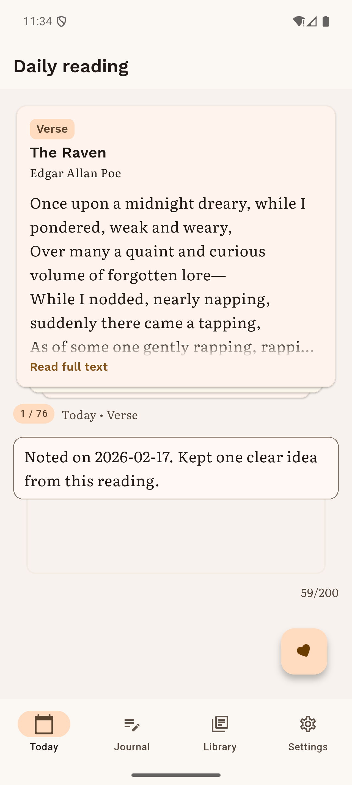
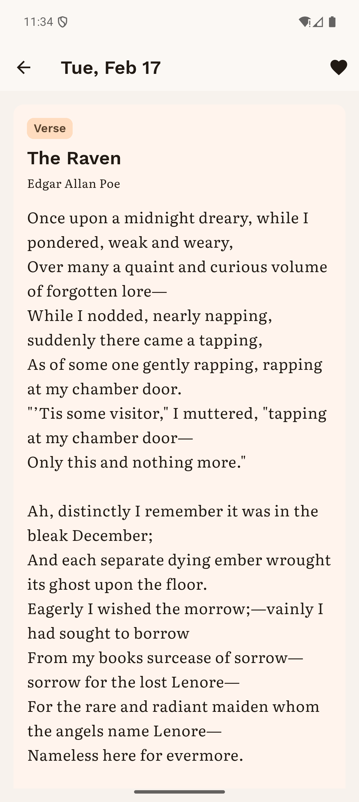
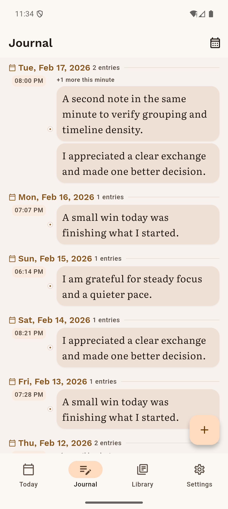
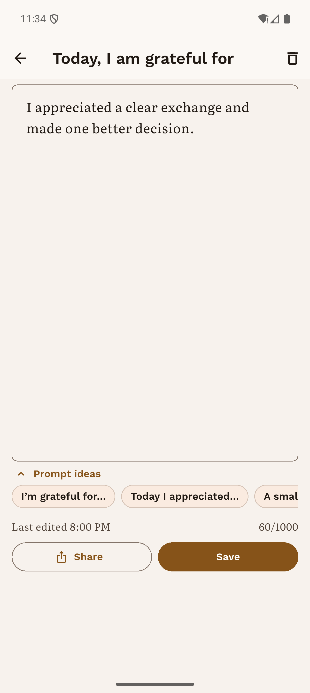
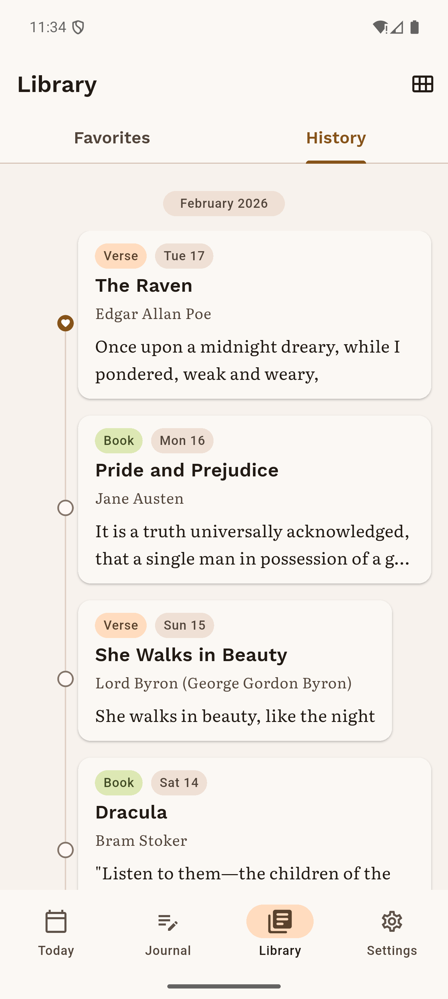
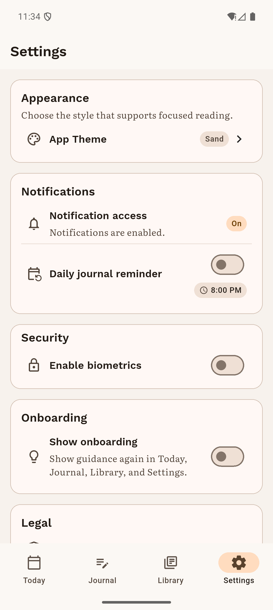

InkBit
A calm daily reading and reflection ritual.
What you can do in InkBit
- Build a daily reading ritual.
- Save favorite lines and quotes.
- Capture brief reflections in the moment.
- Review your journal history over time.
- Surface personal insights from your entries.
- Use local-first privacy controls.
Screenshots





